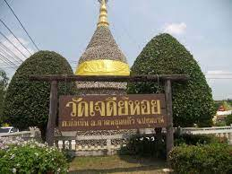
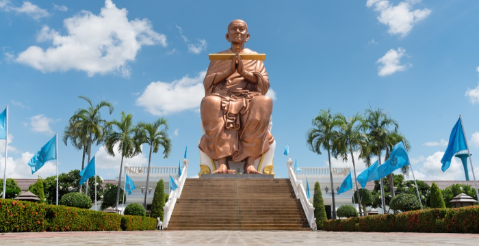
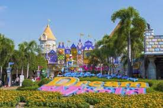
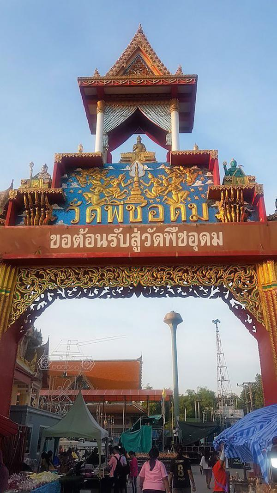
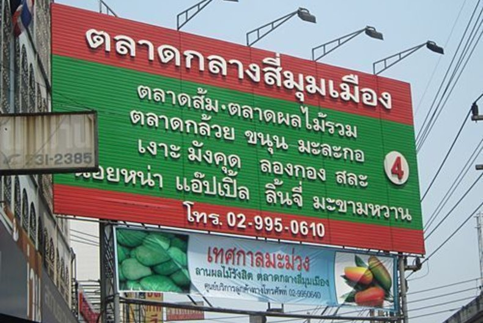
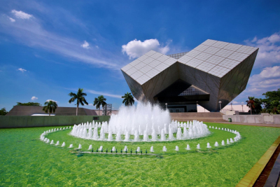
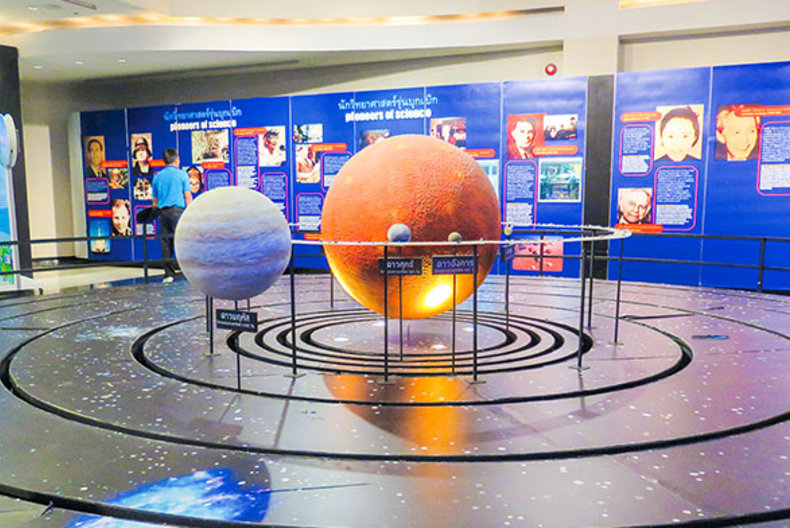

1. วัดเจดีย์หอย
วัดเจดีย์หอย เป็นวัดที่มีความสวยงดงามตระการตา ซึ่งสร้างขึ้นเมื่อปี 2538 โดยท่านพระครูสุนทร คุณธาดา หรือหลวงพ่อทองกลึง สุนทโร สำหรับวัดแห่งนี้เป็นวัดที่ก่อสร้างด้วยฟอลซิลเปลือกหอยแปดล้านปี หนึ่งเดียวในไทย ภายในวัดมีการตกแต่งแบบศิลปะแบบมอญ ที่เต็มไปด้วยเปลือกหอย
 |
2. วัดโบสถ์ หรือ วัดหลวงพ่อโต
ที่คนนิยมมาสักการะกัน เพราะเป็นองค์ที่มีขนาดใหญ่ ตั้งอยู่ริมแม่น้ำเจ้าพระยานอกจากนั้นก็ยังมี หลวงพ่อเหลือ พระพุทธรูปศักดิ์สิทธิ์คู่บ้านคู่เมืองปทุมธานีอีกด้วย โดยวัดนี้จะเก่าแก่มาก สร้างมาตั้งแต่ปี พ.ศ. 2164 โดยชาวมอญที่อพยพมาจาก เมืองหงสาวดี ถือได้ว่าเป็นวัดเก่าโบราณในสมัยกรุงศรีอยุธยา
 |
3. สวนสนุก Dream World
สวนสนุก Dream World ที่เที่ยวยอดฮิตของคนทุกเพศทุกวัย ที่นี่เป็นแหล่งรวมเครื่องเล่นที่ให้ความบันเทิง ได้ทั้งเด็กและผู้ใหญ่ ตั้งอยู่บริเวณถนนรังสิต-นครนายก คลองสาม
 |
4. วัดพืชอุดม
วัดพืชอุดม ตั้งอยู่ริมถนนลำลูกกา คลอง 13 ภายในวัดมีวิหารขนาดใหญ่ ที่ออกแบบก่อสร้างได้อย่างวิจิตรเป็นพุทธศิลป์ที่ควรค่าแก่การทัศนศึกษาเที่ยวชม โดยชั้นล่างจัดสร้างและตกแต่งเป็นนรกที่ได้รับความทุกข์อย่างแสนสาหัสเป็นผลจากการกระทำ ความชั่วต่างๆโดยมีหุ่นสัตว์นรกที่เคลื่อนไหวด้วยกลไกที่มีเสียงประกอบเพียงแห่งเดียว ของเมืองไทยและชั้นบนแสดงสวรรค์ภูมิและพรหมภูมิ ด้วยภาพเขียนประกอบแสงสีสวยสดงดงามตระการตา
 |
5. ตลาดสี่มุมเมือง
ตลาดสี่มุมเมือง ถือได้ว่าเป็นศูนย์กลางผลิตผลของทางการเกษตรเลย โดยเฉพาะเป็นตลาดขายส่งผักและผลไม้ขนาดใหญ่ มีครบทุกอย่าง ตั้งแต่ ผัก ผลไม้ ของสด ของแห้ง ของดอง รวมไปถึงดอกไม้ เป็นต้น
 |
6. องค์การพิพิธภัณฑ์วิทยาศาสตร์แห่งชาติ
พิพิธภัณฑ์วิทยาศาสตร์และศูนย์การเรียนรู้ต่างๆ ประกอบด้วย พิพิธภัณฑ์วิทยาศาสตร์ พิพิธภัณฑ์ธรรมชาติวิทยา พิพิธภัณฑ์เทคโนโลยีสารสนเทศ และ พิพิธภัณฑ์พระรามเก้า ซึ่งพิพิธภัณฑ์ทั้งหมดตั้งอยู่ ณ เทคโนธานี ถนนเลียบคลองห้า ตำบลคลองห้า อำเภอคลองหลวง จังหวัดปทุมธานี


|
 |